It’s late. The house is finally quiet. And you’re holding something heavier than your phone.
Meet Grace, a composite of many women. She and Daniel have been married twelve years. They prayed together on their wedding night. On paper, nothing is wrong: no scandal, no suitcase by the door.
But Daniel answers with one word. “Fine.” “Same stuff.” “Nothing.” He scrolls his phone in bed. When she reaches for his hand, he squeezes it and lets go, the way you would with a friend. They’re excellent at logistics. They just can’t talk to each other.
So she wipes a counter that’s already clean, and thinks: “I’m losing him, and I don’t even know when it started.”
If that made your chest tighten, keep reading.
You smile at church. You laugh at family gatherings. Meanwhile you’re the manager of the house, the only one who reads the memos, and nobody asks how you are. Then the questions start, always in the quiet: Have I gained too much weight? Do I nag? Am I just not interesting anymore?
A marriage like this rarely collapses overnight. It drifts, one skipped conversation at a time, until you can’t remember when you stopped being anything but roommates.
Keep reading because I’ll show you a better question, without begging, performing, or losing yourself…
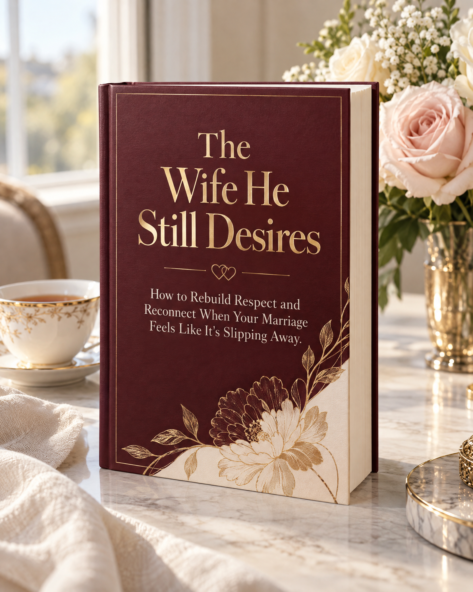
From the desk of the author, published by Dreamzhub Publications:
Dear friend,
You haven’t been passive. You’ve tried free articles that contradict each other, hints that made him defensive, a new look, prayer without a plan, a friend who meant well, and a counseling suggestion he refused. None of it failed because you didn’t try hard enough. You’ve been solving a complete problem with scattered pieces.
What you need is the missing structure, and a few beliefs cleared away first:
“If I become more attractive, he’ll want me again.” Desire grows from respect, emotional safety, and connection. Appearance alone can’t repair distance.
“If he loved me, he wouldn’t feel so far away.” A husband can love his wife and still feel disconnected. Love, respect, and desire are three different things.
“If I keep hinting, or keep quiet, he’ll eventually get it.” Criticism, defensiveness, and withdrawal form a cycle. The way out is to interrupt it.
“I have to wait for him to change first.” You can’t control his choices, but you can change how you communicate and the invitation you extend.
“If this is happening, it’s my fault.” Some of it may be yours, and that’s the part you can change. Some belongs to him, and some to stress and seasons no prepared you for.
Most women ask, “How do I make him want me again?” That question turns you into a project to be polished. A better is…
Desire in a long marriage is rarely about one thing, like appearance or effort. It grows in the soil of respect, emotional safety, appreciation, playfulness, and genuine connection. When those wither, desire often withers with them. When they are tended, it has room to return.
That’s why this book exists. The Wife He Still Desires is a plain-spoken, faith-friendly guide that works privately, at your own pace, and without needing him to agree to anything first. It will never ask you to shrink yourself, beg for love, or earn your place in your own home.
You can get instant access to The Wife He Still Desires and all five bonuses today.
[LIST PRICE $50]
[Only $4 Today!]
Delivered instantly.
Access The Wife He Still Desires in the next 2 minutes.
➜ Download The Wife He Still DesiresClick here to go to step #214-day money-back guarantee. Read the first chapters, try the first scripts, and if it isn’t useful, email [broodreamz@gmail.com] within 14 days for a full refund.
It will not guarantee your marriage is saved. Marriage takes two people. You’ll finish clearer, stronger, and better equipped, whatever happens.
It will not teach you to manipulate. No tricks, no games, no formulas to “make” someone love you.
It will not blame you for everything. We look honestly at your part, because that’s the part you can change, and we say plainly that some problems belong to him.
It will not ask you to tolerate abuse, control, or danger. If your safety is at risk, Chapter 10 and the Appendix help you find real support.
It will not replace professional help, and it will not require you to be perfect. Grace is built in.
Rather, it gives you a way to be gentle where you need gentleness, and honest where you need honesty. Both are acts of love.
“Two are better than one… if either of them falls down, one can help the other up.” [Ecclesiastes 4:9-10,]
Whether you work on this alone or one day together, the book helps you take one wise step at a time. You are not asked to do everything today. You only have to begin.
Published by Dreamzhub Publications. Written by an author who has walked through this and has chosen to remain private.
Why write it? Because marriage is worth fighting for. A ship is safe in the harbor, but that’s not what ships are built for. A marriage wasn’t meant to be kept safe by staying silent. It was meant to be sailed, with honesty, courage, and grace. The stories in the book, including Grace and Daniel, are composites.
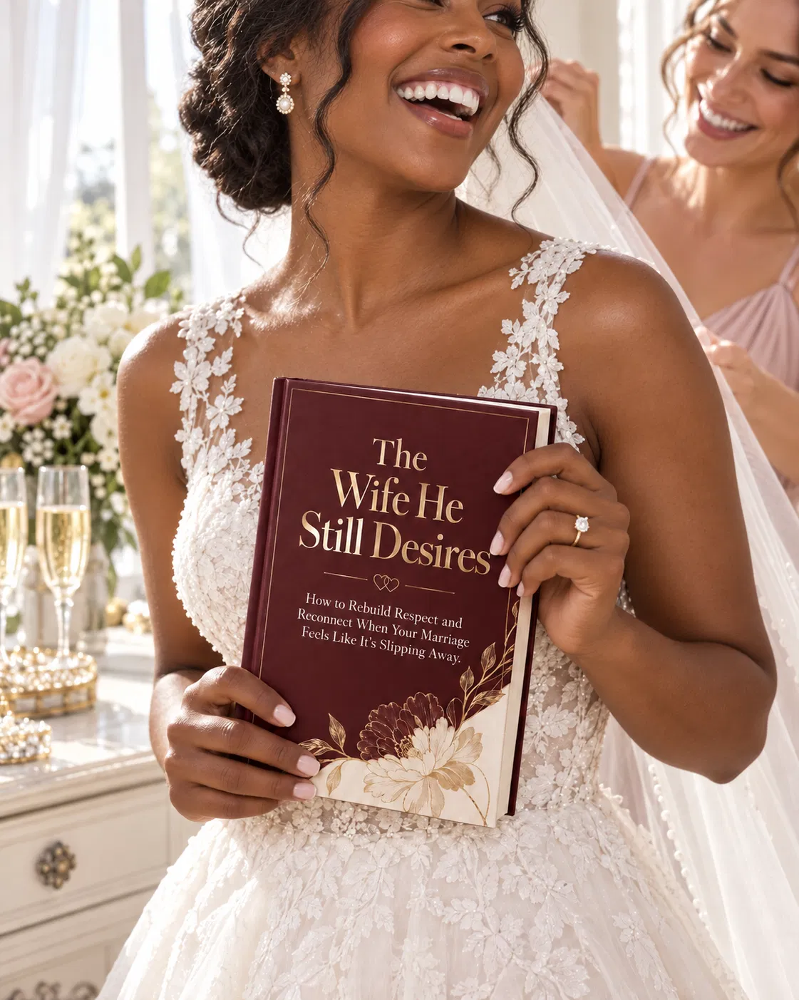
[Name][Only if true: “and [number] more women are using The Wife He Still Desires…”]
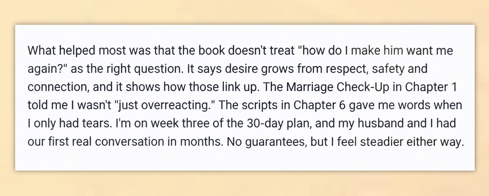
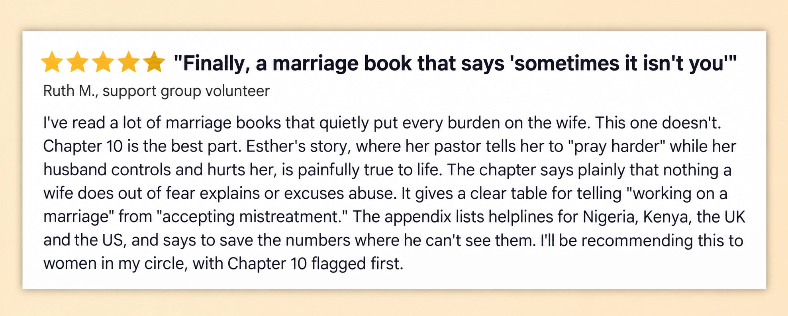
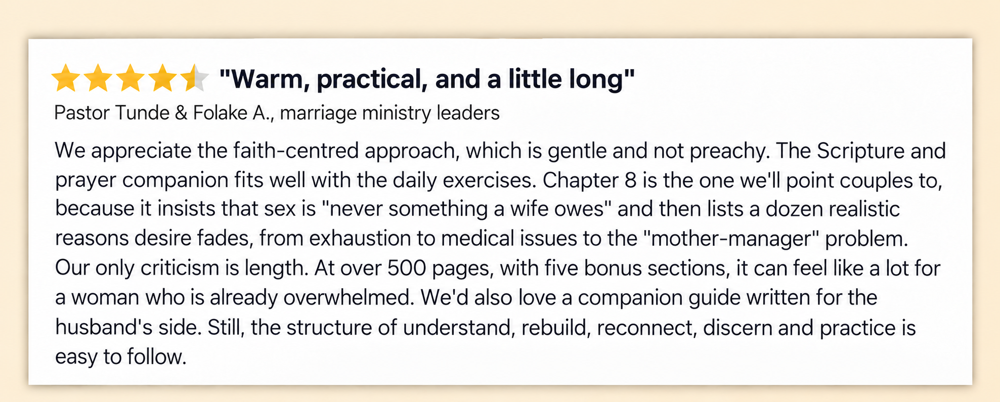
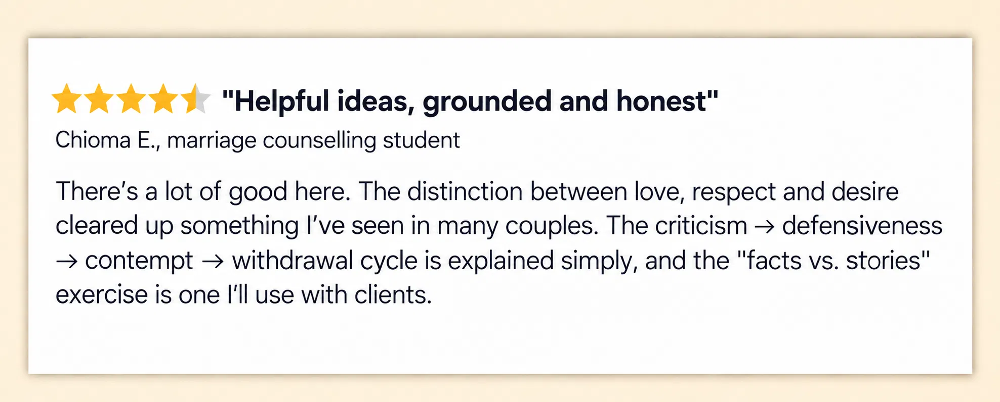
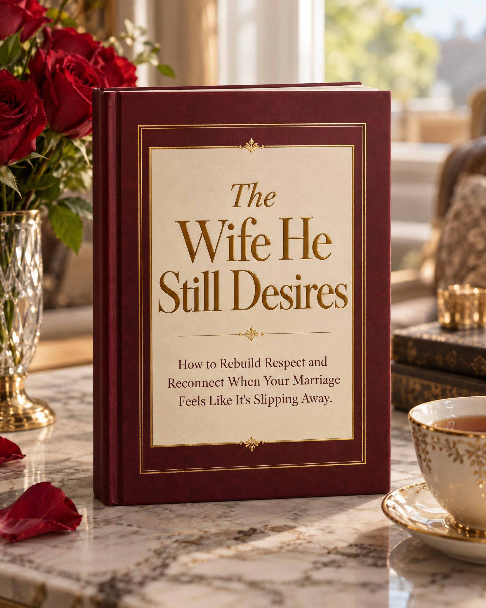
The full book: 12 chapters across 5 parts, the Marriage Check-Up, the “Say This, Not That” script bank, the green flags and red flags tracker, and your 30- to 60-day plan, with an appendix on when to seek help.
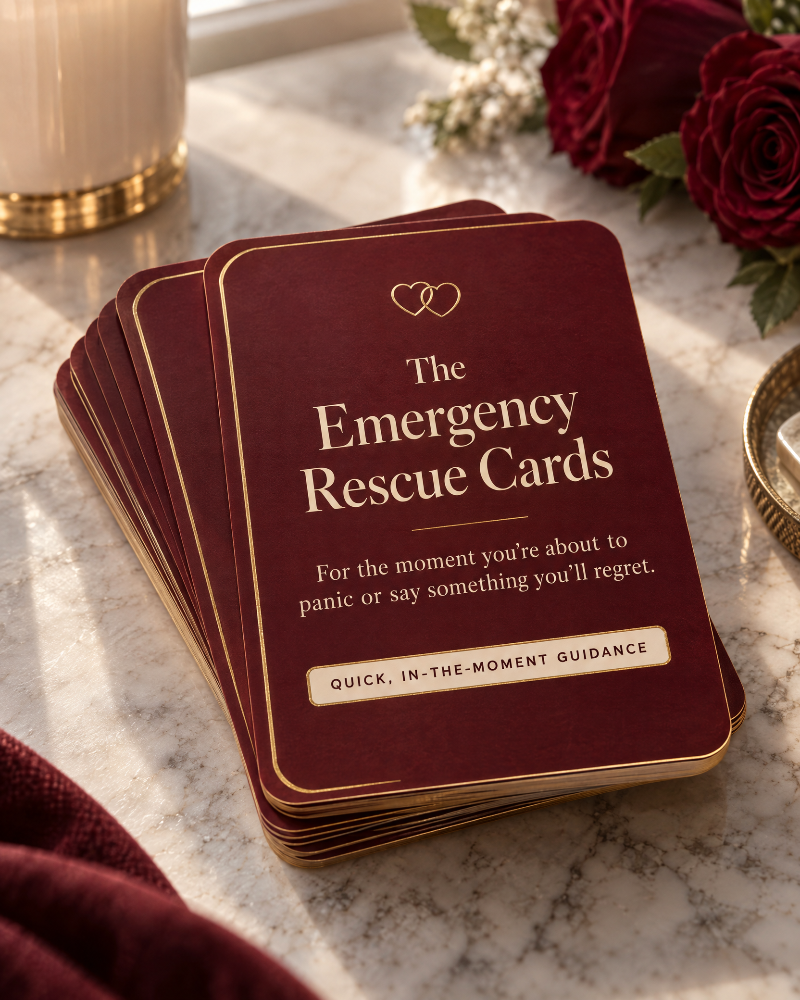
For the moment you’re about to panic or say something you’ll regret. Quick, in-the-moment guidance for the hard moment itself.
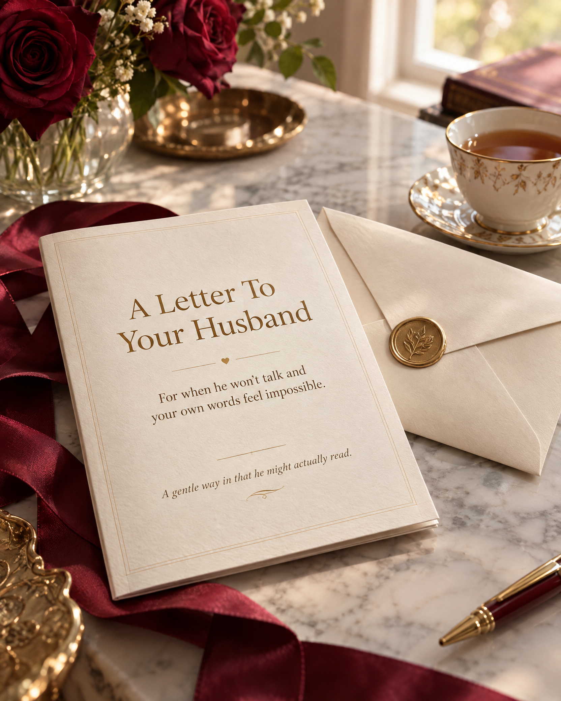
For when he won’t talk and your own words feel impossible. A gentle way in that he might actually read.
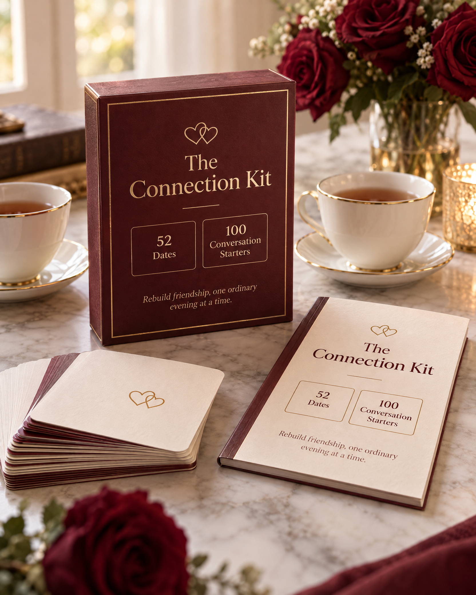
For “we never do anything together anymore.” 52 dates and 100 conversation starters to rebuild friendship, one ordinary evening at a time.
For when you’re running on empty. A month of grounding, encouragement, and prayer to walk beside the plan.
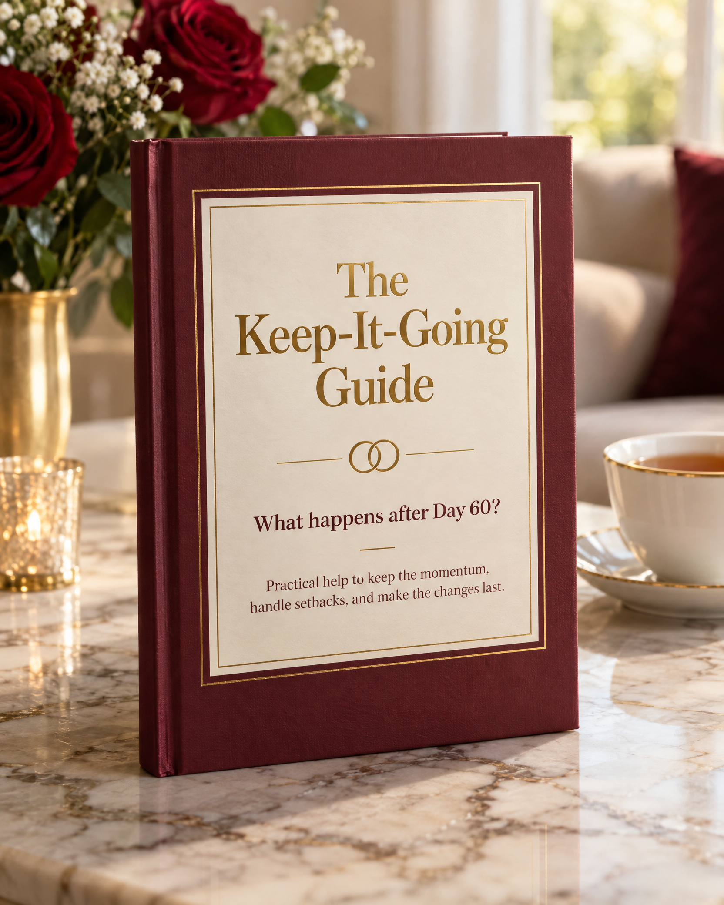
For “what happens after Day 60?” Practical help to keep the momentum, handle setbacks, and make the changes last.
Read the first chapters. Try the Marriage Check-Up. Use the first scripts. If this book isn’t useful to you, email [broodreamz@gmail.com] within 14 days for a full refund, no awkward questions. We can’t guarantee what your husband will choose, but we can remove the risk of finding out what’s possible.
A note about safety. This book is for hurting marriages, not dangerous ones. If you are afraid of your husband, or there is violence, control, or threats, please don’t use this as your only support. Chapter 10 and the Appendix give you a safety checklist and crisis resources. Your safety, and your children’s, comes first.